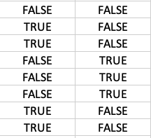
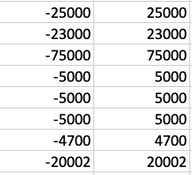
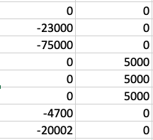
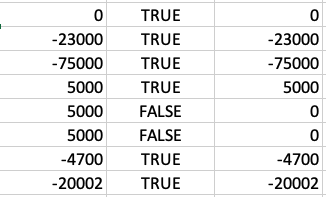

Some Excel idioms & notes
This column
Use the indirect method to locate this column.
Lookup
Use a value from this table to find a value in another table. The 4th parameter is the default if not found.
XLOOKUP([@AcctName],tbl_retir_vals[Item],INDIRECT("tbl_retir_vals["&this_col_name()&"]"),0)
Construct a key
Often the exact key has to be constructed. Excel uses double quotes for strings and & for concatenation. TRIM is needed if the field is, say, indented.
Delimited strings to arrays
Often the field value may have delimiters and you need to pick out one of the sections. User the TEXTSPLIT and INDEX functions. For instance to pick out the 2nd item of the field key. Note the delimiter can be longer than a single character.
Substring match
Is a substring in a list? Use SEARCH wrapped with ISNUMBER.
ISNUMBER(SEARCH("Start BalHSA - "&INDEX(TEXTSPLIT([@key]," - "),2),tbl_balances[Key]))
Is value in a list
For use in filters, determine if a value is in a list. Construct the list with curly brackets. Use the type 0 for exact match.
ISNUMBER(MATCH(tbl_balances[ValType],{"Start Bal","Add/Wdraw","Reinv Amt","Fees","Unrlz Gn/Ls"},0)
Filter then aggregate
Filters produce more than one row so the results have to be aggregated by SUM, PRODUCT, MIN or the like.
Criteria are all required with multiplied together with *. To allow either criterion, use +.
In this example several rows are selected to compute the end balance.
SUM(FILTER(INDIRECT("tbl_balances["&this_col_name()&"]"),(tbl_balances[AcctName]=tbl_balances[@AcctName])*ISNUMBER(MATCH(tbl_balances[ValType],{"Start Bal","Add/Wdraw","Reinv Amt","Fees","Unrlz Gn/Ls"},0))))
In another example, two items are multiplied:
PRODUCT(FILTER(INDIRECT("tbl_balances["&this_col_name()&"]"),(tbl_balances[AcctName]=tbl_balances[@AcctName])*((tbl_balances[ValType]="Reinv Rate")+(tbl_balances[ValType]="Rlz Int/Gn"))))
If filter can empty
If the result can be empty then use the if_empty parameter
=-SUM(FILTER(INDIRECT("tbl_retir_vals["&this_col_name()&"]"),(tbl_retir_vals[Item]=TRIM([@Account]))*(tbl_retir_vals[Election]="ROLLOVER"),0))
Convert transaction format to net change
The transfers_plan table is in a transactional format, with a year, two accounts (from and to) and a value. This ensures that both sides of the transaction are accounted for. However, most other tables have a net change style - what happens to a particular account in a year. This formula converts the plan to the net change format.
Working in memory, two arrays element by element, then add them up.
Construct debit/credit array for account
Make boolean array
This creates an array of two columns and as many rows as in the table.
(tbl_transfers_plan[[From_Account]:[To_Account]]=tbl_balances[@AcctName])
Construct two values array column array
This creates two columns with the same number of rows with a negative and positive version of each amount
Multiply them
|  | X |  | = |  |
Add across rows
The BYROW and LAMBDA functions are used. Each row is passed into lambda as the parameter row, which is then summed. the _xlpm. is needed as Excel uses that to identify the parameter name. It is actually stored in the internal XML but not displayed in the Excel user interface.
BYROW((tbl_transfers_plan[[From_Account]:[To_Account]]=tbl_balances[@AcctName])*HSTACK(-tbl_transfers_plan[Amount],tbl_transfers_plan[Amount]),LAMBDA(_xlpm.row,SUM(_xlpm.row)))
The result is then multiplied by the year selection to get all net of all the transactions for the account and year, as shown here:

Final sum
Wrap the whole thing in a SUM() to get the net change in the account for the year.
SUM(BYROW((tbl_transfers_plan[[From_Account]:[To_Account]]=tbl_balances[@AcctName])*HSTACK(-tbl_transfers_plan[Amount],tbl_transfers_plan[Amount]),LAMBDA(_xlpm.row,SUM(_xlpm.row)))*(tbl_transfers_plan[Y_Year]=this_col_name()))
Conditional Formatting limits
Conditional formatting formulas cannot use structured references, including bare table names.